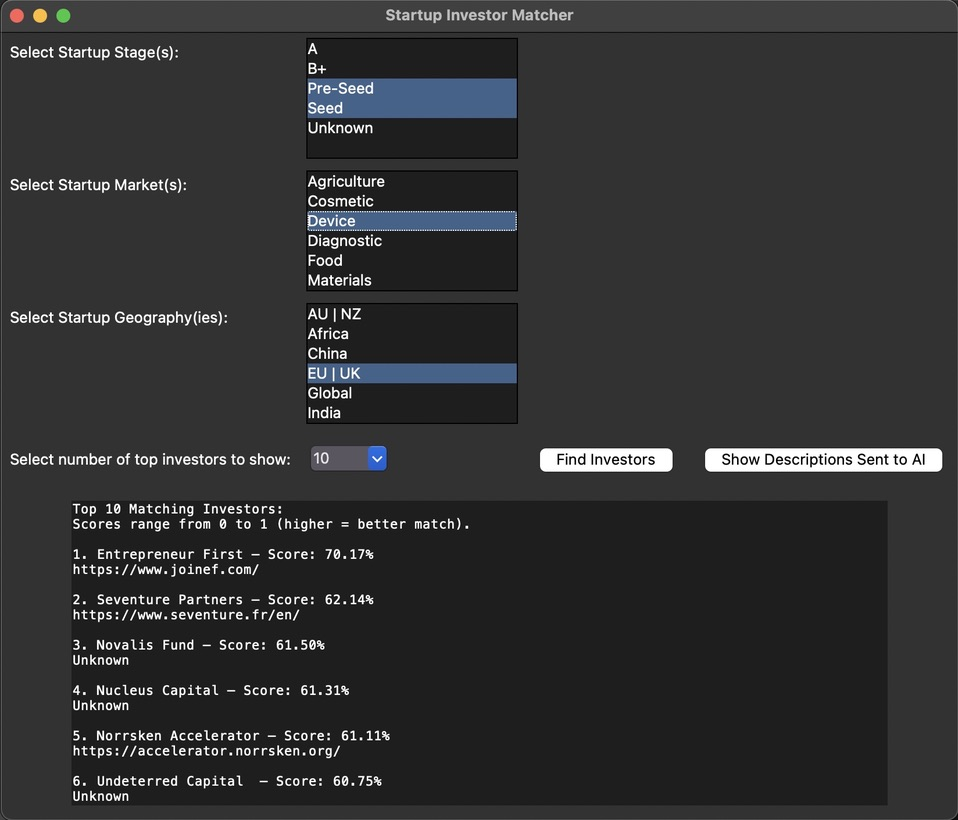
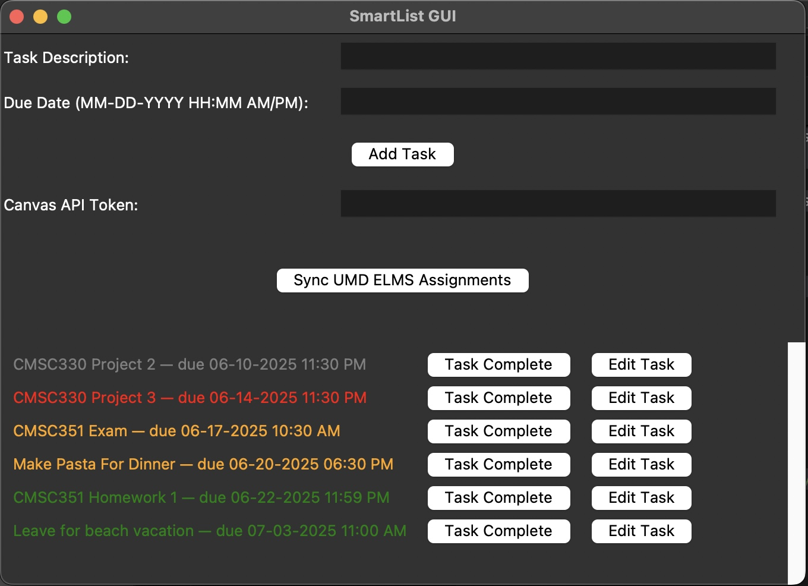
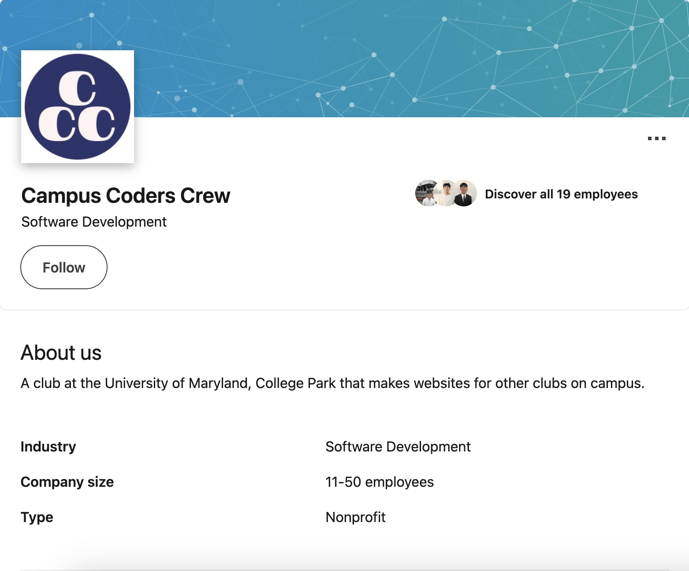
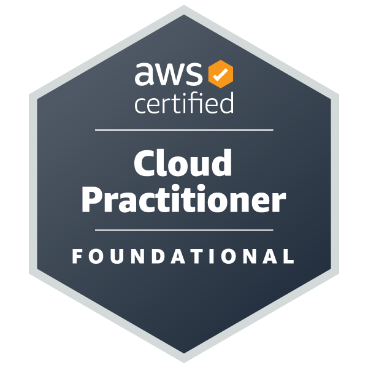
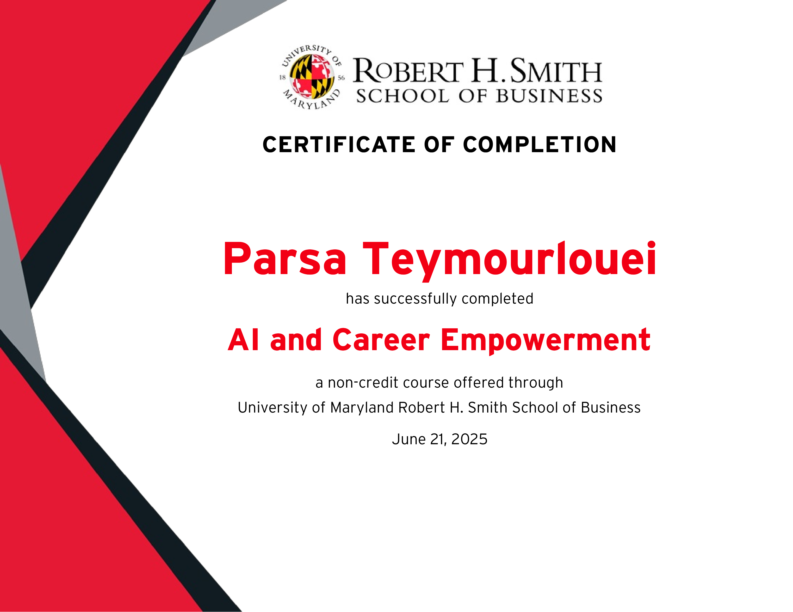
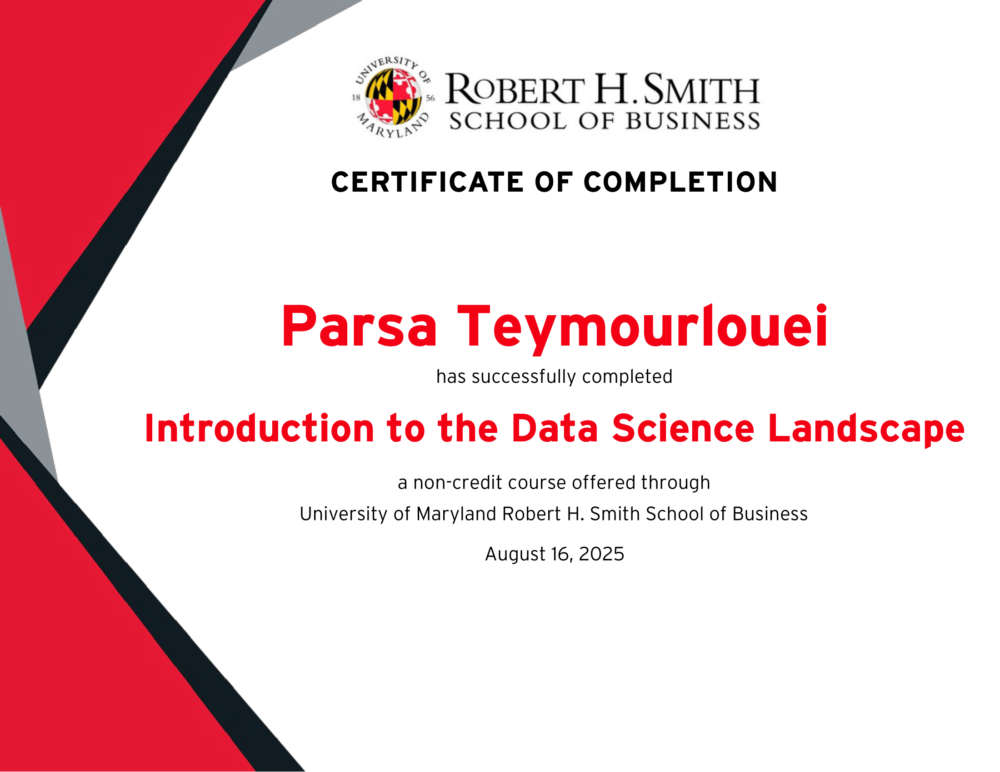
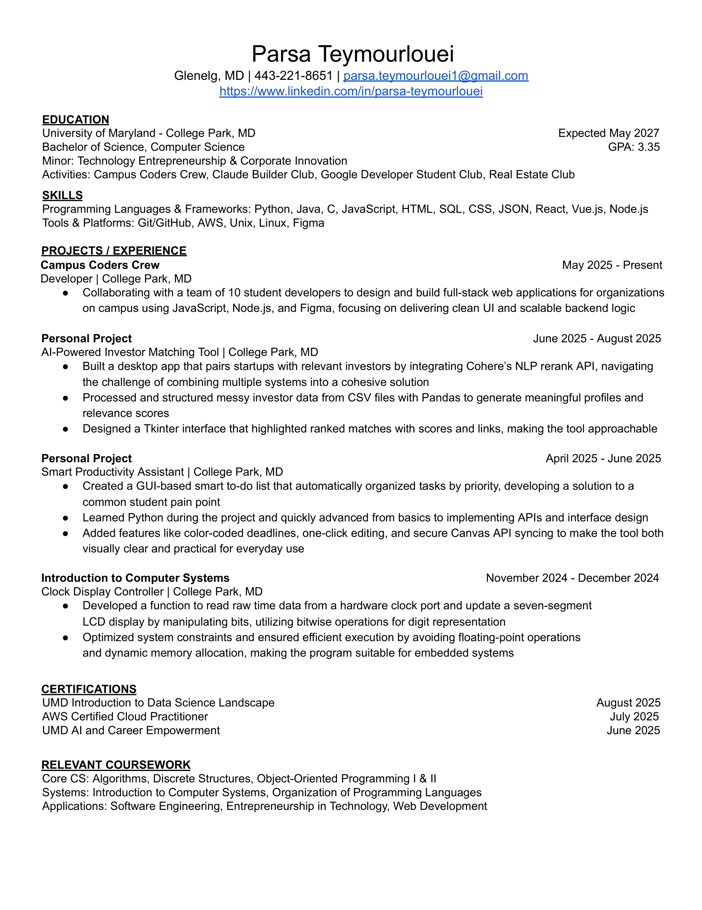

Parsa Teymourlouei
Computer Science | University of Maryland, College Park
parsa.teymourlouei1@gmail.com | (443) 221-8651
Computer Science | University of Maryland, College Park
parsa.teymourlouei1@gmail.com | (443) 221-8651

August 2025
An AI-powered platform that connects startups
with investors based on stage, industry, and geographic fit. Built to streamline the investor
discovery process, it uses natural language processing and machine learning to match startup
needs with relevant investor profiles. This saves entrepreneurs valuable time and refining
outreach strategies with data-driven confidence.

June 2025
A productivity tool I developed
to simplify task management, seamlessly integrating with the Canvas LMS to sync
assignments and due dates. SmartTask offers intuitive scheduling, task creation,
and editing capabilities, making it easier to stay organized and reduce oversight.
Built with a clean, color-coded interface and optimized for real-world student productivity
workflows.

May 2025 - Present
As a developer in the Campus Coders Crew,
I worked collaboratively on student-driven tech projects—contributing to design, code reviews,
debugging and testing. This role sharpened my teamwork and technical communication skills while
fostering hands-on experience with software development best practices.

July 2025
A foundational certification that demonstrates
my competency in AWS cloud services, architecture, and security. It validates my ability to design,
deploy, and manage applications on AWS. This achievement underscores a practical understanding of
cloud-based infrastructures and readiness to work on scalable, modern systems.

June 2025
I earned a certificate in Artificial Intelligence
and Career Empowerment from UMD’s Robert H. Smith School of Business. The course blends AI
fundamentals (responsible AI, supply chain transformation, building modern AI systems, and more)
with professional skill-building modules like career transitions, negotiating from a place of
weakness, and entrepreneurship

August 2025
I completed an introductory course that
provides a high-level overview of data science and business analytics applications. They covered
exploratory data analysis, visualization, hypothesis testing, and the use of modern analytics
tools like Tableau. It helped me understand how to extract actionable insights from data and
paved the way for deeper data-driven experimentation.

Click to view my resume (PDF)
Feel free to reach out for opportunities or collaborations.
parsa.teymourlouei1@gmail.com
(443) 221-8651